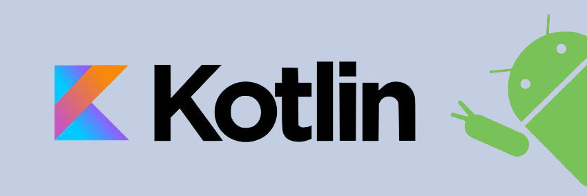
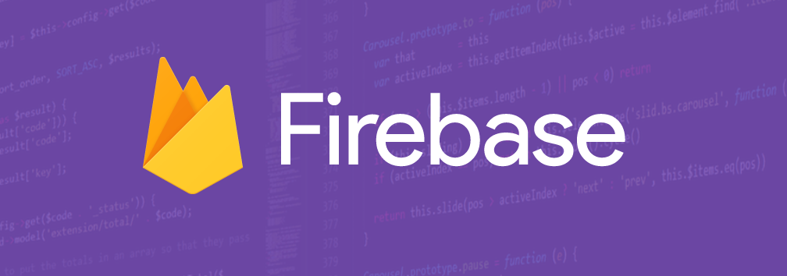
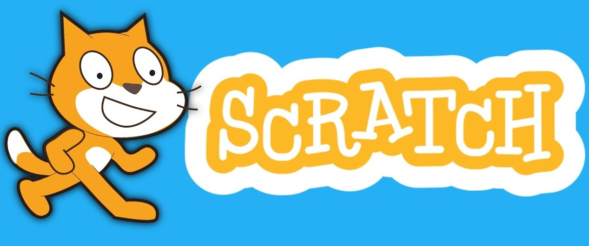
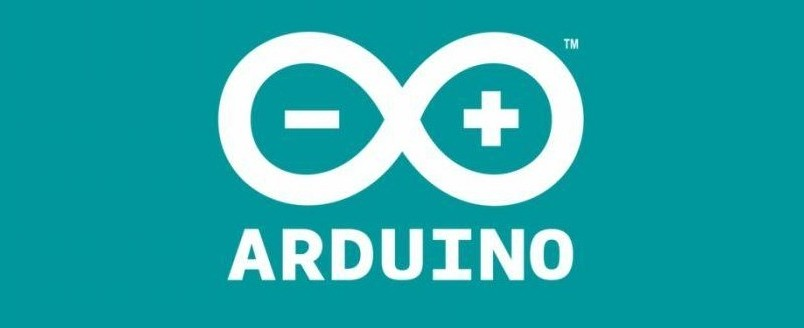

Android - Kotlin
Desenvolvimento de um aplicativo privado para uma transportadora
nacional, utilizando XML, Kotlin, Plataforma Android Studio e Firebase
Angular CLI
Desenvolvimento de duas web pages para o Banco Safra com o
framework Angular, utilizando o HTML 5, CSS, Bootstrap e Typescript. Aliás,
seja bem vindo à minha web page, com HTML, SCSS, Bootstrap, um pouco de lógica
e alguns copos de café :)
Ionic 5
Desenvolvimento pessoal da aplicacação Afazeres
e também de alguns projetos pessoais ainda não disponibilizados no github ou google play

Firebase
Utilizado para projetos pessoais e profissionais, o Firebase
foi a ferramenta de banco de dados da quais tive mais convivio, ainda mais quando se
trata de Cloud Firestore

Scratch
Em prol ao voluntariado foi utilizada uma linguagem mais didática,
para que ajudasse no aprendizado das crianças da ONG IKMR - IMPACTAR

Arduino
Utilizado no projeto de IOT da faculdade, para construir um "Braço
Robótico", o Arduino é sem dúvidas um hobby ainda não financiável para projetos
caseiros e experiências desastrosas com capacitores elétricos e servo motores